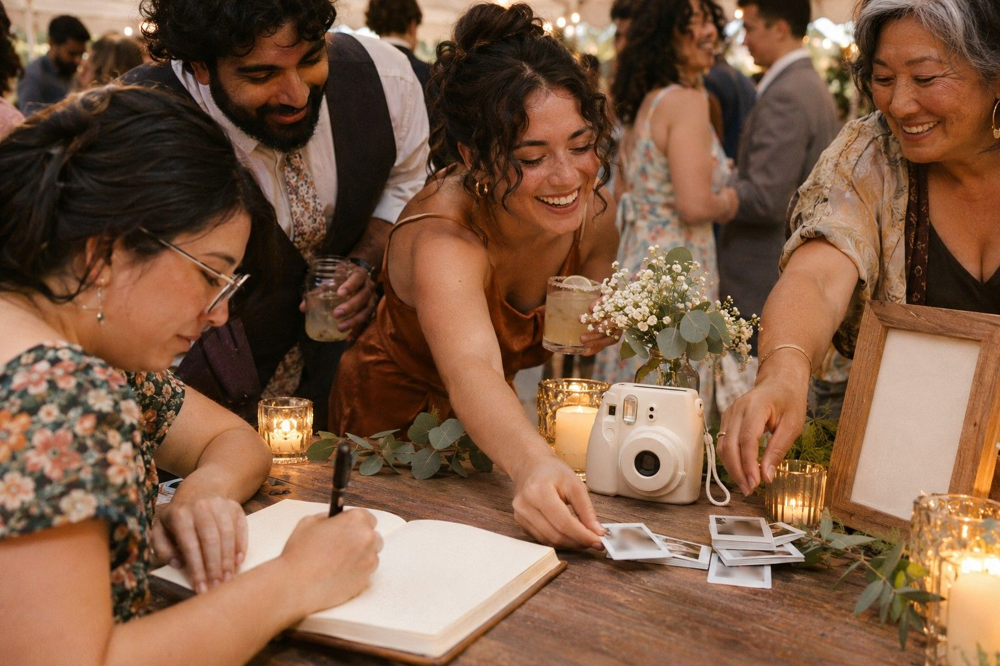
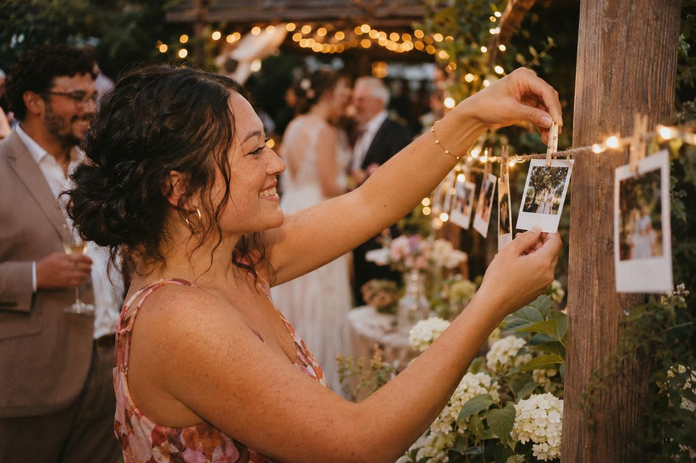

Wedding Guest Book Alternatives: 25 Ideas With Costs
Photo, audio, keepsake and written ideas, with costs and a tip for each one.

Short answer: Most wedding guest book alternatives fall into four groups: photo guest books (instant-camera prints, booth strips or a shared camera roll), audio guest books (a vintage phone, about $100 to $300 to rent), keepsakes guests sign (puzzle pieces, Jenga blocks, a globe, a record), and written cards (advice, date ideas, recipes). Choose the one you’ll actually display or revisit.
A guest book only earns its table if you look at it again. Below are 25 wedding guest book alternatives, each with a rough cost, how much effort it takes, what you end up keeping and one tip that makes it work, followed by a table for picking by personality. Costs are for about 100 guests, in US dollars, as of November 2026.
How to choose between wedding guest book alternatives
Four questions settle it faster than scrolling through ideas:
- Where will it live afterward? A shelf, a wall, a drawer or a hard drive. If you can’t picture the spot, it will end up in a box.
- How long does it take a guest? Roughly: signing a block takes seconds, a photo plus a note takes about a minute, and a recorded message takes a couple of minutes. Long lines at a guest book table mean fewer entries.
- Does it need a helper? Instant cameras, phone booths and video corners work best with one friend checking on them.
- Who can’t take part? Kids who can’t write, guests with shaky hands, relatives who can’t travel. The best options give everyone a way in.
Cost tiers below are our rough estimates for a 100-guest wedding: $ is under $50, $$ is $50 to $150 and $$$ is over $150. Where we could check a real price, it’s linked. Most of the $ ideas double as easy DIY projects.
Photo guest book ideas
1. Instant-camera guest book
Often called a Polaroid guest book, this works with any instant camera, Polaroid’s own or Fujifilm’s instax. Cost: $$$. At Fujifilm’s US list prices, an instax mini 12 camera is $93.95 and a 20-print mini twin pack is $25.99. For 100 guests, that’s 5 packs ($129.95) plus the camera, about $224 before the album. Effort: medium. You keep: an album of faces, each with a note beside it.
Tip: Fujifilm says mini prints take about 90 seconds to develop, so set out a tray for developing prints and a fine-tip permanent marker. One friend restocking film keeps the line moving. Compare a few retailers before you buy, since list price is only a starting point.
2. Photo booth strip book
Cost: the booth plus a blank album ($ for the album). Effort: medium. You keep: a book of strips with messages written beside them.
Tip: Ask the booth vendor to print two copies of every strip, one for the guest and one for the book, and put the album, tape and pens right at the booth exit. Our wedding photo booth ideas compare rented, DIY and phone-based booths.
3. Shared-camera photo guest book
Cost: $ to $$, depending on the app and guest count. Effort: low. You keep: every guest’s photos in one place, each tagged with who took it.
Tip: Guests scan a QR code on the table and shoot from their own phones, so the guest book fills itself all night, including the dance floor at midnight. Print the favorites afterward for a physical book. There’s a full setup below.
4. Signed photo mat
Cost: $$. WeddingWire’s guest book roundup listed a framed photo guest book from $119 in 2020; a frame with a wide mat you buy yourself can cost less. Effort: low. You keep: an engagement photo on the wall, surrounded by signatures.
Tip: Choose a mat at least 3 inches wide and test the pen on the back first. Some inks bead or smear on coated mats.
5. Instant-photo display line
Cost: $$$ with a new instant camera and film for 100 guests (see idea 1); the string and mini clothespins add only a few dollars. Effort: medium. You keep: loose prints you can move into an album or a box.
Tip: Ask guests to write on the white border before they clip the photo up. The line doubles as reception decor, and it fills in front of everyone, which nudges the next person.

6. Engagement photo book with blank space
Cost: $$ for a printed photo book. Effort: low on the day, an evening of design beforehand. You keep: a coffee-table book with messages next to your own photos.
Tip: Design every other page blank, or use wide white margins, and choose an uncoated paper option if your printer offers one, so pens write cleanly.
Audio and video guest book ideas
7. Audio guest book phone
Cost: $$ to $$$. As of November 2026, After the Tone lists its vintage-phone rental at $299 and up, with shipping and a return label included, while one local vendor on Zola lists packages at $100, $150 and $200. Effort: low. You keep: recordings of your guests’ voices.
Tip: Put the phone in a quiet corner, away from the speakers, with a small sign of three prompts: a memory, a piece of advice, a wish. Ask how you’ll receive the recordings (download, USB or vinyl) and whether that costs extra.
8. Video message corner
Cost: $ if you use a phone you own on a tripod. Effort: medium. You keep: short clips you can edit together later.
Tip: Choose a quiet, well-lit spot, plug the phone into power, turn on Do Not Disturb and tape a card with one prompt beside it. Ask for messages under 30 seconds so nobody hogs the corner.
9. Video messages from guests who can’t come
Cost: $ (a shared folder) or more for a video-tribute service. Effort: low. You keep: messages from people who couldn’t be there.
Tip: Email the request about two weeks before, ask everyone to film the same way (vertical or horizontal), and play the compilation at the brunch the next day.
Keepsake guest book ideas guests sign
10. Jenga blocks
Cost: $ (a classic set and paint pens). Effort: low. You keep: a game you play on anniversaries, with messages surfacing as blocks come out.
Tip: Buy two sets for a big guest list, and let the ink dry before stacking, or messages smudge onto the neighboring blocks.
11. Puzzle pieces
Cost: $$. WeddingWire’s 2020 roundup listed a heart-shaped wooden puzzle guest book from $62. Effort: low. You keep: a framed puzzle, or one you rebuild each anniversary.
Tip: Count pieces against your guest list before you order, and keep a few spares for couples who want one each.
12. Signed globe
Cost: $$$. The same roundup listed a personalized decorative globe from $170. Effort: low. You keep: a shelf piece that sparks stories.
Tip: Set out metallic and white pens that show on dark oceans, and ask guests to sign a place they think you should visit.
13. Anniversary wine bottles
Cost: $$ (wine plus labels). Effort: medium. You keep: bottles to open on your first, fifth and tenth anniversaries, with guests’ notes on the labels.
Tip: Ask a wine shop for bottles that will age well, and store them on their side somewhere cool and dark.
14. Quilt squares
Cost: $ for fabric squares and fabric markers; sewing them into a quilt is the real cost, so get a quote first. Effort: high, mostly afterward. You keep: a quilt you’ll use for decades.
Tip: Mark a 1-inch border on each square so nobody writes where the seams will go, and heat-set the ink following the marker’s instructions.
15. Fingerprint tree or signed art print
Cost: $ to $$. WeddingWire’s 2020 roundup listed a birch tree signature poster from $85. Effort: low. You keep: framed art.
Tip: Set out two or three ink colors and a pack of wet wipes, and keep the table away from the food.
16. Signed vinyl record
Cost: $ (the record and paint pens). Effort: low. You keep: a framed record of your first-dance song.
Tip: White or silver paint pens show best on black vinyl. Buy a second copy if you want to play it.
17. Wishing stones
Cost: $ to $$. WeddingWire’s roundup listed a set of 100 for $130; craft-store river rocks cost far less. Effort: low. You keep: a bowl of wishes on the coffee table.
Tip: Metallic paint markers write best on stone. A clear sealant afterward keeps the writing from rubbing off.
18. Wooden hearts in a drop-top frame
Cost: $$. Effort: low. You keep: a shadow box full of signed hearts.
Tip: Order about 10% more hearts than guests, and choose a frame deep enough that the hearts don’t jam at the slot.
19. Holiday ornaments
Cost: $. Effort: low. You keep: ornaments you hang every December.
Tip: Use shatterproof ornaments and metallic markers, and set out a bowl of ornament hooks so the box stays tidy.
20. A book you love
Cost: $. Effort: low. You keep: a favorite book on your shelf, filled with notes.
Tip: Pick something with white space: a children’s picture book, a travel atlas or a book of poems you read at the ceremony.
21. Signed welcome sign or canvas
Cost: $ extra if you already have a welcome sign. Effort: low. You keep: wall art from the day itself.
Tip: Ask your designer to leave a wide blank border, then move the sign to the guest book table after the ceremony.
Written guest book ideas with a purpose
22. Advice cards in a jar
Cost: $. Effort: low. You keep: a jar to open on anniversaries or bad days.
Tip: A specific prompt gets better answers than “advice.” Try “The best thing to do after a fight” or “A tradition we should steal from you.”
23. Date-night idea cards
Cost: $. Effort: low. You keep: a year of dates planned by the people who know you.
Tip: Ask guests to sign each card, then send them a photo from the date when you do it.
24. Postcards mailed over the first year
Cost: $ (postcards and stamps). Effort: medium. You keep: surprise mail all year.
Tip: Have guests address and date each card for a month of your first year, and give one organized friend the stack to mail.
25. Recipe cards
Cost: $. Effort: low. You keep: a recipe box from your favorite cooks.
Tip: Send blank cards with the RSVP so guests can fill them in at home, then collect them in a box on the day.
Pick a guest book alternative by personality
| If you two are… | Try | Why it fits |
|---|---|---|
| Photo people | Instant-camera book, shared-camera guest book | Every message comes with a face |
| Sentimental savers | Audio guest book, postcards | Voices and handwriting age best |
| Game-night regulars | Jenga blocks, puzzle | You’ll actually take it off the shelf |
| Travelers | Signed globe, travel atlas | Guests mark places, not just names |
| Wine lovers | Anniversary wine bottles | A reason to celebrate year one, five and ten |
| Crafters | Quilt squares, fingerprint tree | Handmade, and it shows |
| Minimalists | A book you love, signed record | One object, no clutter |
| On a tight budget | Advice jar, ornaments, signed welcome sign | Usually under $50 |
| Hosting 200+ guests | Shared-camera guest book, wishing stones | Quick for everyone, no bottleneck |
Mixing two works well: a quick one everyone does (stones, blocks) plus a deeper one for the people who want to say more (audio, letters). If you’re also collecting guests’ photos from the day, our guide to collecting photos from wedding guests compares every method, and our notes on printing your photos help when the digital album should become a book.
How to make a photo guest book with Filmsera
Filmsera turns idea 3 into a guest book that fills itself. Create a film for the wedding in the iPhone app and pick when it develops. The “Tonight”, “Tomorrow” and “In 3 days” presets all develop at 9 p.m., so for a reveal the morning after, choose “Custom” and set the time. Guests scan the QR code on the tables and shoot from their own phones. They can join and shoot from their phone’s browser, with no app or account, or in the free Filmsera app on iPhone. Photos stay hidden until the reveal; then the whole film appears at once for everyone in it, each photo tagged with who took it. That tag is what makes it a guest book: every shot comes with a name.
For the booth-strip version, set an iPhone on a tripod at the guest book table and run Filmsera’s Photo Booth. It has six layouts (Strip ×4, Strip ×3, Filmstrip ×6, Grid, Duo and Print), a 3-2-1 countdown and pose hints. Each strip can go to “Add to film,” so it lands in the wedding roll, or out as “Print-ready” for a paper album.


Cost, at the time of writing: hosting a film for up to 10 guests is free, and guests never pay. Bigger weddings use a one-time pass for that film, not a subscription: Party $7.99 (up to 30 guests), Celebration $24.99 (up to 100) or Wedding $49.99 (up to 250). Every pass keeps the film’s photos for 1 year and adds an HD recap with no watermark; free films keep photos on Filmsera’s servers for 30 days after the reveal, so save your favorites. The host needs an iPhone (iOS 17 or later), and browser guests take photos only. It’s also digital: if you want something for the shelf, print the best shots. You can see how it runs on the day on our Filmsera for weddings page, or you can time the reveal for the post-wedding brunch.
Filmsera makes a photo guest book from every guest’s phone, with each shot tagged by who took it and revealed at the time you choose. Get Filmsera on the App Store
FAQ
What can I use instead of a wedding guest book?
Good alternatives include an instant-camera photo book, a photo booth strip album, an audio guest book phone, and objects guests sign, like Jenga blocks, puzzle pieces, a globe or a framed print. Written options such as advice cards or date-night ideas work well too. Choose based on where it will live afterward and how long each guest will spend on it.
How much does an audio guest book cost?
As of November 2026, the rental listings we checked ran from about $100 for a basic local package to $299 and up for a shipped vintage-phone service. Check what’s included: delivery or shipping, how you receive the recordings (download, USB or vinyl) and whether extras cost more. Buying your own phone is another option if you want to keep it.
How do you set up a Polaroid or instant-camera guest book?
Put an instant camera, enough film for about one print per guest plus spares, a blank album, photo corners or double-sided tape and a fine-tip permanent marker on one table. Add a small sign with the steps: take a photo, write a note beside it, stick it in. Ask one friend to restock film and keep things moving.
Do you need a wedding guest book at all?
No. A guest book is a tradition, not a requirement, so skip it if nothing about it appeals to you. If you want one, choose something you’ll display or revisit, because a book that sits in a closet isn’t worth the table space. A shared photo album from the day can serve the same purpose with no extra station.
What is the cheapest wedding guest book alternative?
A book you already love, an advice-card jar, holiday ornaments or signing the welcome sign you already bought usually cost under $50 in total. Craft-store river rocks with paint markers are cheap too. The most expensive choices tend to be rented services such as audio phones and photo booths.
Written by the Filmsera team
Filmsera is a shared disposable camera app for iPhone: create a film for your event, let guests join by QR code from the app or their phone's browser, and open the whole roll together at the reveal. Download on the App Store →
Photos in this article are illustrations created for Filmsera, not customer photos. App screenshots are from Filmsera on iPhone.